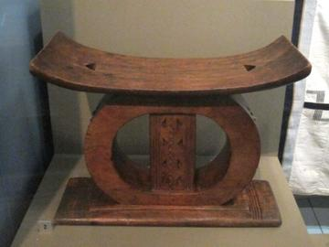

Home / Living Traditions / Africa: Sahel, West and Central
Encyclopedia ID 22321
Anansi stories
Also known as Anansesem · Anansi tales
Anansesem, the spider stories of the Akan people of Ghana, follow Anansi, a small trickster who wins against bigger and stronger animals by wit, and sometimes loses to his own greed.
How it is played
A storyteller performs the tales at evening gatherings, with call-and-response, songs and voices for each animal. Listeners already know the characters, so the pleasure is in the telling and in the lesson each trick carries. The stories crossed the Atlantic and live on in Caribbean and American folklore.
Heritage note
Part of the living heritage of Ghana.
Origins
A living tradition passed from person to person; it is not tied to a single dated origin. It belongs to the cultural world of Africa: Sahel, West and Central.
Available in Arcforge
Try a 90-second preview in your browser Google Play App Store
Sources
Related entries


Adinkra Cloth Stamping
Ghana +1 · Crafts and makingPlay preview · in the Paper & Paint of the World app
Krobo Powder-Glass Beads
Ghana · Crafts and making
Fufu Pounding Rhythm
Ghana +1 · Crafts and makingPlay preview · in the Music & Dance of the World app
Asafo Flag Appliqué
Ghana · Crafts and making
More from Ghana



Ghanaian stool carving
Ghana · Crafts and makingPlay preview · in the Woodcraft & Metal of the World app
Achi
Ghana · Board and table games